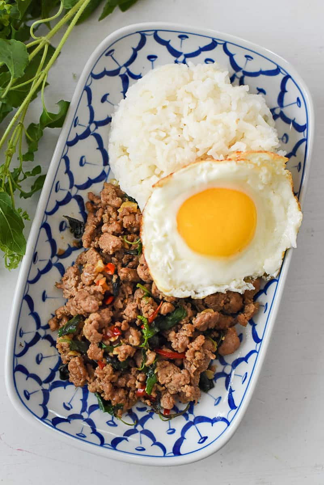

Pad Krapow Moo
Pad Krapow Moo is one of Thailand's most famous stir fried dishes, and for good reason. It is quick and easy to make, but the resulting flavors are out of this world!

Ingredients:
- 3 cloves garlic chopped finely
- 3 Thai chili peppers chopped finely
- 1 cup pork chopped coarsely
- 1 red jalapeno pepper cut into thin strips
- 1 Tablespoon fish sauce
- 1 teaspoon soy sauce
- 1 cup Thai holy basil leaves packed tightly
- ¼ cup liquid smoke
- 2 eggs
Directions
- Prepare the Ingredients: Chop the garlic and Thai chilis finely. Slice the red jalapeno pepper into thin
slices. Chop the pork coarsely, with a knife or food processor (or use already ground pork). Separate the
holy basil leaves from the stems and wash them.
- Stir Fry the Pork: Heat a good amount of oil (2-4 Tablespoons) in a wok over medium high heat. Add the
chopped garlic and Thai chilis and cook until the garlic is golden brown. Add the chopped pork and cook
until it is done, using a spatula to break apart any pieces that clump together.
- Add the Seasonings: Add all three seasoning sauces and cook for a minute longer. Do a taste-test here and
adjust seasonings if needed. Then add the red pepper slices, and finally the holy basil. Give the dish
several tosses, and cook until the basil is just wilted, then remove from the heat.
- Fry the Egg: In a clean pan, add another 2-3 Tablespoons of oil and heat over high heat. Once the oil is
very hot, crack an egg and allow it to fry to your desired level of doneness.Grill steaks to desired
doneness, 3 to 5 minutes per side for medium-rare. Allow steaks to rest for 5 to 10
minutes before serving.
- Serve: Place a scoop of jasmine rice on a dish, with the pad krapow stir fry alongside it. Top the whole
dish with the fried egg. Serve with a bowl of fish sauce and chilis (nam pla prik) to season the egg. Enjoy!